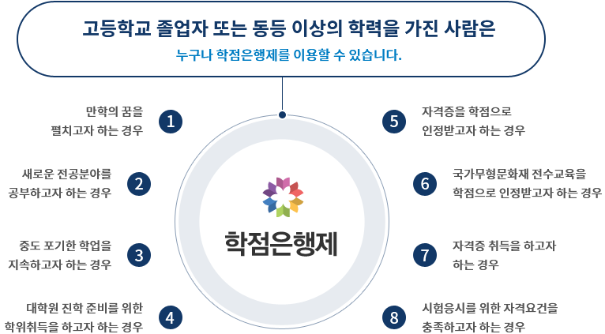

- 학점이수방법
- 학위종류 및 취득조건
- 주의사항
- 학습플랜예시
학점은행제란,
학점인정 등에 관한 법률」에 의거하여 학교에서 뿐만 아니라 학교 밖에서 이루어지는 다양한 형태의 학습 및 자격을 학점으로 인정받을 수 있도록 하고,
학점이 누적되어 일정 기준을 충족하면 학위취득을 가능하게 함으로써 궁극적으로 열린 학습사회, 평생학습사회를 구현하기 위한 제도입니다.
또한 학점은행제는 평생학습체제 실현을 위한 제도적 기반으로서 학교교육은 물론 다종다양한 평생교육의 학습결과를 사회적으로 공정하게 평가인정하고,
그 교육의 결과를 학교교육과 평생교육 간에 상호 인정하며, 이들이 상호 유기적으로 연계를 맺도록 함으로써 개개인의 학습력을 극대화할 수 있도록 하는 제도입니다.

학점은행제와 대학교 차이
공통점
- 학위취득 시 법적으로 동일한 학력을 인정받음
- 각종 자격 취득, 취업, 진학 가능함
- 전공을 선택해야 함
- 2월, 8월 학위를 수여함
차이점
학점은행제
- 학점인정 등에 관한 법률에 의거 진입장벽이 낮음
- 스스로 표준교육과정을 기준으로 필요한 학점 이수
- 다양한 학점취득방법이 있음
- 전문학사, 학사, 전문학사, 타전공, 학사 타전공 과정이 있음
- 필요한 등록절차를 이행해야 함
- 등록에 따른 수수료 발생
대학교
- 대학교 학칙에 따라 운영
- 수능 등 입학전형을 통해 입학
- 입학정원 등 정해져 있음
- 학교에서 제공하는 교육과저에 따라 수업 이수
- 부(복수)전공 과정이 있음
- 입학금, 등록금 납부
- 캠퍼스가 있음
- 입학, 졸업개념이 있으며, 졸업연한이 정해져 있음
학점은행제 제도활용
- 학위취득을 통한 일반/학사편입 or 대학원진학
- 사회복지사2급/보육교사2급/한국어교원2급 등 별도의 자격시험없이 자격증 취득
- 산업기사(41학점), 기사(106학점) 응시자격 충족
- 청소년지도사 필기면제
- cpa응시자격 충족
- 군입영연기 등
제도활용에 대한 자세한 안내